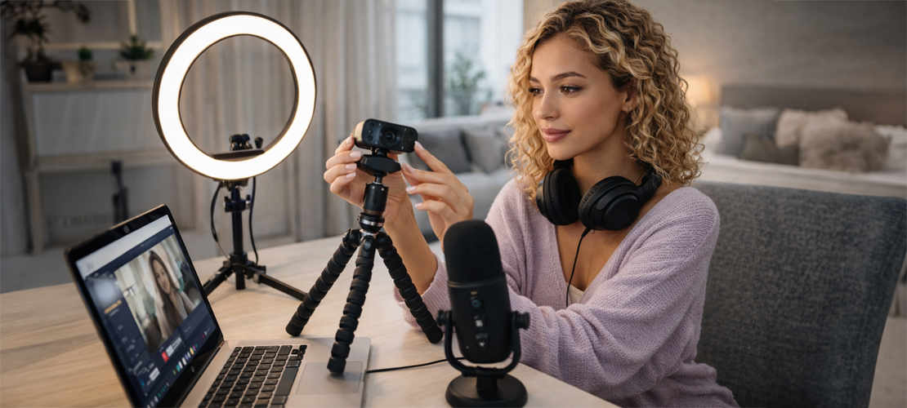

Рассмотрите использование веб-камеры или зеркальной/беззеркальной камеры. Зеркальные и беззеркальные камеры обеспечивают лучшее качество изображения, но требуют дополнительных настроек и оборудования.
Ищите камеры с разрешением не менее 1080p (Full HD) для четкого и качественного изображения.
Примеры камер в разном ценовом сегменте:
Используйте мягкое освещение, чтобы избежать резких теней. Профессиональные кольцевые лампы и софтбоксы отлично подходят для создания равномерного освещения.
Убедитесь, что освещение направлено на ваше лицо, чтобы улучшить качество видео на трансляции.
Используйте внешний микрофон, чтобы обеспечить чистый и качественный звук. Конденсаторные микрофоны обычно предлагают лучшее качество звука.
Рассмотрите микрофоны с USB или XLR-подключением, в зависимости от вашего оборудования.
Убедитесь, что ваш компьютер или ноутбук имеет достаточную производительность для обработки видео в реальном времени. Оперативная память не менее 8 ГБ, а лучше 16 ГБ и современный процессор помогут избежать задержек.
Если планируете стримить в высоком качестве, хорошая графическая карта также будет полезна.
Убедитесь, что у вас стабильное и быстрое интернет-соединение — рекомендуется не менее 10 Мбит/с для загрузки, но чем больше, тем лучше.
Если возможно, используйте проводное соединение, так как оно более надёжно, чем Wi-Fi.
Соблюдая эти рекомендации, вы сможете выбрать оборудование, которое будет соответствовать вашим потребностям и поможет создать качественную трансляцию.